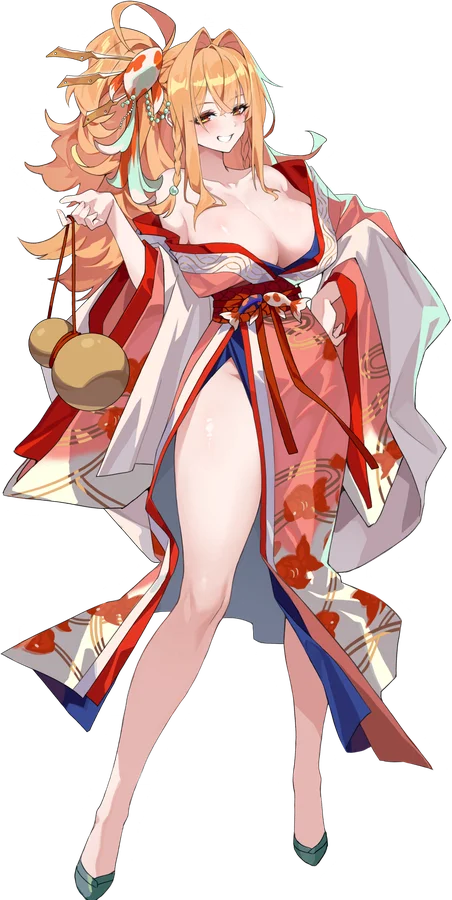
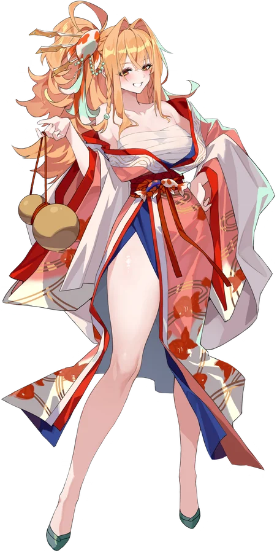
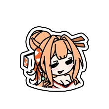
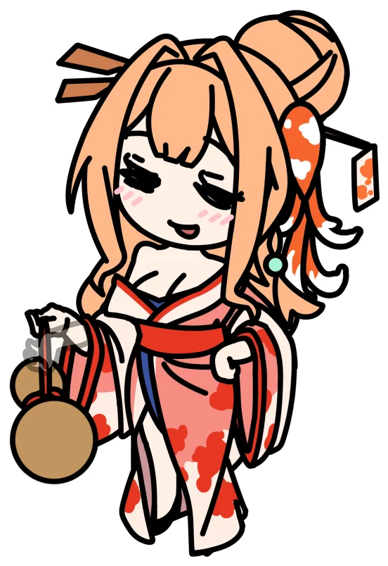
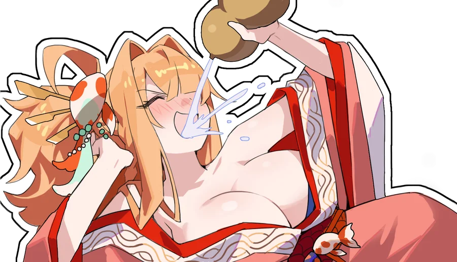
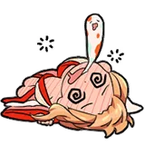
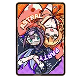

角色官方原文 ↗
苍鲤 · 金鳞御使
龙崎分家的天川家，一直是三神教中核心的名门望族。作为现任家主的妹妹，她平日里家族事务并不算繁重。她虽出身富贵，却无骄奢纨绔之气；平时对小侄女真梦梓的成长颇为上心，是个不折不扣的“溺爱型”姑姑。
编号130性别女生日5月19日组织天川家族,龙崎家族,三神教喜欢甜酒团子
攻击1
防御1
生命9
主动把酒言欢冷却 3
指定5格内的一个地块，放置一个葫芦饮，自身获得1层反击。 葫芦饮：经过时停留，回复2点生命值。
PVE指定10格内的一个地块，放置一个葫芦饮，自身获得1层反击。 葫芦饮：经过时停留，恢复2点生命值。获得葫芦饮（攻击力+3），持续2回合。
被动不醉不归
任意角色触发葫芦饮后，天川苍鲤获得1层反击。
PVE反击时获得1层金鳞（每层使自身防御力+1最多拥有4层）。 任意角色触发葫芦饮或仙酿后，天川苍鲤获得1层反击。 金鳞（每层使自身防御力+1最多拥有4层）达到4层时，立即获得金鲤化龙（每层【金鳞】额外使自身攻击力+1，主动技）：每层金鳞（每层使自身防御力+1最多拥有4层）额外使自身攻击力+1，主动技能放置葫芦饮改为放置仙酿。 仙酿：经过时停留，恢复3点生命。获得仙酿（攻击力+4），持续2回合。停留结算后触发1次疾行（不可和疾行地块效果叠加）。
被动留给你的
真梦梓触发葫芦饮或仙酿后，使真梦梓获得1层觉醒（到达8层时，转变为【真龙形态】）。
基础资料
姓名天川苍鲤
英文名Souri
日文名蒼鯉
从属组织天川家族,龙崎家族,三神教
上线时间2026-11-12
喜欢食物甜酒团子
初始骰子布丁骰子
礼物普通的饮料、礼盒巧克力、非常牛的电脑配件
徽章川河、山峦
PVE 特性
- 达到1星时攻击力+1
- 初始星币+6
- 达到3星时攻击力+1、防御力+1、移动速度+1

默认
获取方式抽奖



羁绊皮肤
获取方式苍鲤缔结契约后使用
共 8 个表情，点击可放大。

头像2

名片2
卡牌1

骰子1
主页背景1
人物传记
除了周末回家族大宅，她平时都居住在自己经营的小酒馆里，有时也会替大哥与嫂子照看真梦梓。
画廊其他素材
本地未收录该角色的语音台词。